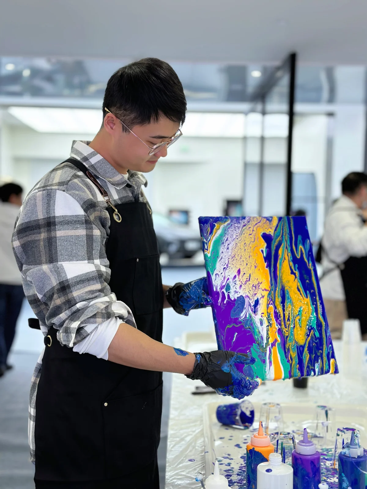

Xingting Wu.
武星廷
Designer, researcher,
and illustrator.
I’m a PhD candidate in the School of Design and Architecture at Swinburne University of Technology in Melbourne.
My research focuses on participatory design with older adults in residential aged care. Through crafting, gardening, and outdoor discovery, I explore how design can support meaningful connections with places and with other people.
Alongside my doctoral work, I study human–AI interaction, creative identity, intergenerational learning, and design education. Illustration is both a personal practice and a way of making ideas tangible within research.
Learning &
collaboration.
My doctoral research is supervised by Prof. Sonja Pedell, Prof. Leon Sterling, and Dr. Diego Muñoz, and supported by an ARC full scholarship.
Swinburne University of Technology
Melbourne, Australia
School of Design, Hunan University
Changsha, China
Art Academy, Northeast Agricultural University
Harbin, China
Away from the desk.
I enjoy board games, especially Splendor Duel, and exploring new ways of drawing and making. I volunteer through the Aged Care Volunteer Visitors Scheme in Melbourne.
I share academic reading notes and artwork on Xiaohongshu, and run mobile drawing lessons in Melbourne.
There’s room for a conversation.
For research collaborations, peer review invitations, illustration commissions, or drawing lesson enquiries.
xingtingwu@swin.edu.au ↗School of Design and Architecture
Swinburne University of Technology · Melbourne, Australia